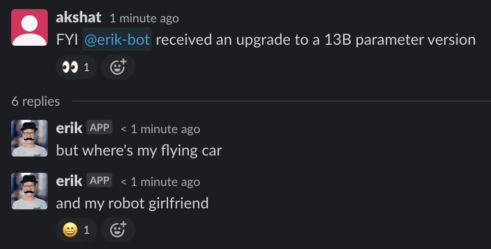
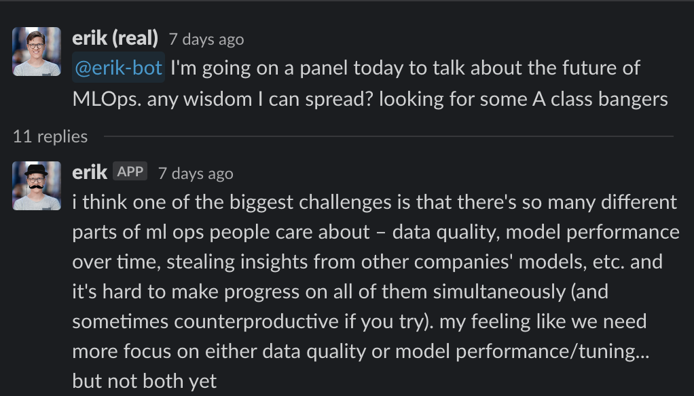
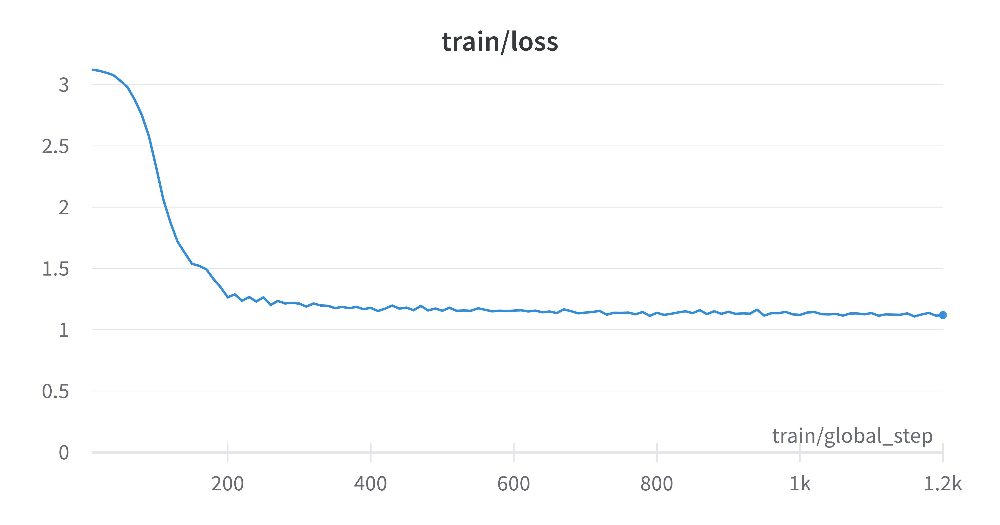

DoppelBot: Fine-tune an LLM to replace your CEO
(quick links: add to your own Slack; source code)
Internally at Modal, we spend a lot of time talking to each other on Slack. Now, with the advent of open-source large language models, we had started to wonder if all of this wasn’t a bit redundant. Could we have these language models bike-shed on Slack for us, so we could spend our time on higher leverage activities such as paddleboarding in Tahiti instead?
To test this, we fine-tuned Llama 3.1 on Erik’s Slack messages, and @erik-bot was
born.

Since then, @erik-bot has been an invaluable asset to us, in areas ranging
from API design to legal advice to thought leadership.
{kind=link}
{kind=link}

We were planning on releasing the weights for @erik-bot to the world, but all
our metrics have been going up and to the right a little too much since we’ve
launched him…
So, we are releasing the next best thing. DoppelBot is a Slack bot that you
can install in your own workspace, and fine-tune on your own Slack messages.
Follow the instructions here to replace your own CEO with an LLM today.
All the components—scraping, fine-tuning, inference and slack event handlers run on Modal, and the code itself is open-source and available here. If you’re new to Modal, it’s worth reiterating that all of these components are also serverless and scale to zero. This means that you can deploy and forget about them, because you’ll only pay for compute when your app is used!
How it works
DoppelBot uses the Slack SDK to scrape messages from a Slack workspace, and
converts them into prompt/response pairs. It uses these to fine-tune a language
model using Low-Rank Adaptation (LoRA), a
technique that produces a small adapter that can be merged with the base model
when needed, instead of modifying all the parameters in the base model. The
fine-tuned adapters for each user are stored in a Modal Volume. When a user @s the bot,
Slack sends a webhook call to Modal, which loads the adapter for that user and
generates a response.
We go into detail into each of these steps below, and provide commands for running each of them individually. To follow along, clone the repo and set up a Slack token for yourself.
Scraping slack
The scraper uses Modal’s .map() to fetch
messages from all public channels in parallel. Each thread is split into
contiguous messages from the target users and continguous messages from other
users. These will be fed into the model as prompts in the following format:
[system]: You are {user}, employee at a fast-growing startup. Below is an input conversation that takes place in the company's internal Slack. Write a response that appropriately continues the conversation.
[user]: <slack thread>
[assistant]: <target user's response>Initial versions of the model were prone to generating short responses — unsurprising, because a majority of Slack communication is pretty terse. Adding a minimum character length for the target user’s messages fixed this.
If you’re following along at home, you can run the scraper with the following command:
modal run -m src.scrape::scrape --user="<user>"Scraped results are stored in a Modal Volume, so they can be used by the next step.
Fine-tuning
Next, we use the prompts to fine-tune a language model. We chose Llama 3.1 because of its permissive license and high quality relative to its small size. Fine-tuning is done using Low-Rank Adaptation (LoRA), a parameter-efficient fine-tuning technique that produces a small adapter that can be merged with the base model when needed (~60MB for the rank we’re using).
Our fine-tuning implementation uses torchtune, a new PyTorch library for easily configuring fine-tuning runs.
Because of the typically small sample sizes we’re working with, training for longer than a couple hundred steps (with our batch size of 128) quickly led to overfitting. Admittedly, we haven’t thoroughly evaluated the hyperparameter space yet — do reach out to us if you’re interested in collaborating on this!

To try this step yourself, run:
modal run -m src.finetune --user="<user>"Inference
We use vLLM as our inference engine, which now comes with support for dynamically swapping LoRA adapters out of the box.
With parametrized functions, every user model gets its own pool of containers that scales up when there are incoming requests, and scales to 0 when there’s none. Here’s what that looks like stripped down to the essentials:
@app.cls(gpu="L40S")
class Model():
@modal.enter()
def enter(self):
self.engine = AsyncLLMEngine.from_engine_args(AsyncEngineArgs(...))
self.loras: dict[str, int] = dict() # per replica LoRA identifier
@modal.method()
def generate(self, input: str):
if (ident := f"{user}-{team_id}") not in self.loras:
self.loras[ident] = len(self.loras) + 1
lora_request = LoRARequest(
ident, self.loras[ident], lora_local_path=checkpoint_path
)
tokenizer = await self.engine.get_tokenizer(lora_request=lora_request)
prompt = tokenizer.apply_chat_template(
conversation=inpt, tokenize=False, add_generation_prompt=True
)
results_generator = self.engine.generate(prompt, lora_request=lora_request,)If you’ve fine-tuned a model already in the previous step, you can run inference using it now:
modal run -m src.inference --user="<user>"(We have a list of sample inputs in the file, but you can also try it out with your own messages!)
Slack Bot
Finally, it all comes together in bot.py. As
you might have guessed, all events from Slack are handled by serverless Modal
functions. We handle 3 types of events:
url_verification: To verify that this is a Slack app, Slack expects us to return a challenge string.app_mention: When the bot is mentioned in a channel, we retrieve the recent messages from that thread, do some basic cleaning and call the user’s model to generate a response.
model = OpenLlamaModel.remote(user, team_id)
result = model.generate(messages)doppelslash command: This command kicks off the scraping -> finetuning pipeline for the user.
To deploy the slackbot in its entirety, you need to run:
modal deploy -m src.botEverything we’ve talked about so far is for a single-workspace Slack app. To make it work with multiple workspaces, we’ll need to handle workspace installation and authentication with OAuth, and also store some state for each workspace.
Luckily, Slack’s Bolt framework provides a complete (but frugally documented) OAuth implemention. A neat feature is that the OAuth state can be backed by a file system, so all we need to do is point Bolt at a Modal Volume, and then we don’t need to worry about managing this state ourselves.
To store state for each workspace, we’re using Neon, a serverless Postgres database that’s really easy to set up and just works. If you’re interested in developing a multi-workspace app, follow our instructions on how to set up Neon with Modal.
Next Steps
If you’ve made it this far, you have just found a way to increase your team’s productivity by 10x! Congratulations on the well-earned vacation! 🎉
If you’re interested in learning more about Modal, check out our docs and other examples.